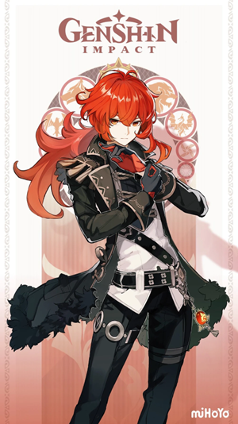
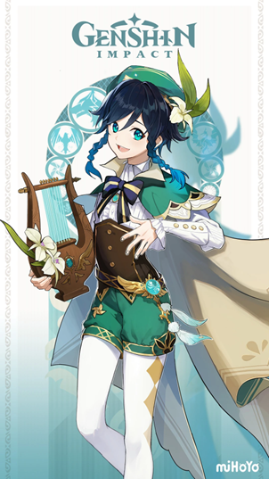

Genshin Impact é um RPG de ação desenvolvido e distribuído pela HoYoverse (inicialmente, miHoYo), lançado em 28
de setembro de 2020 para Android, iOS, Windows e PlayStation 4. Por ser um jogo gratuito, a estratégia de
monetização de Genshin é inteiramente baseada em microtransações, utilizadas para acelerar alguns elementos do
jogo e, principalmente, o sistema de gacha de personagens.
a
Resumo História
Genshin Impact se passa no mundo de Teyvat, um lugar de beleza deslumbrante e repleto de magia. A história
começa com o protagonista, que é um(a) "Traveler" (viajante) em busca de seu(ua) irmão(ã) desaparecido(a).
Durante sua jornada, o(a) Traveler encontra diversos personagens cativantes e se envolve em intrigas políticas,
batalhas épicas e descobertas sobre os Sete, deuses que governam as diferentes regiões de Teyvat.
Jogabilidade
Personagens
Viajante
O Viajante é o protagonista jogável de Genshin Impact. No início do jogo existem 2 gêmeos, uma garota e
um garoto, que viajam pelo universo até que são atacados por uma Deusa Desconhecido que captura um dos
gêmeos, deixa o outro gêmeo desacordado por um tempo não determinado e sela seus caminhos de viagem
deixando-os presos em Teyvat. Após um tempo o gêmeo desacordado acorda e parte em uma jornada em busca
do irmão/irmã perdido, acompanhado pela Paimon.
.

Diluc
Nascido na influente Família Ragnvindr, Diluc é o atual proprietário do Adega do Alvorecer e um nobre
de alta estima na sociedade de Mondstadt. Embora um incidente anterior o tenha levado a se separar dos
Cavaleiros de Favonius, ele continua a proteger Mondstadt à sua própria maneira.

Venti
Venti é um bardo amante do vinho e de espírito livre em Mondstadt e o atual corpo mortal de Barbatos, o
Arconte Anemo. Ele também é um personagem Anemo jogável em Genshin Impact.